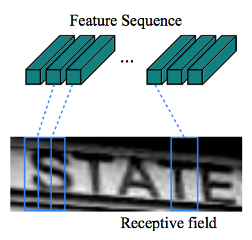

Figure 1. 数据示例 "keep"

Figure 2. CTC模型结构\[[1](#参考文献)\]

Figure 3. 不同尺寸的图片

Figure 4. 图像特征序列
Table 1. RNN每个frame输出的标签分布示例
通过查找上表，很容易得到模型生成任何标签序列的概率，比如生成3个字符 "hel" 的概率的计算如下： $$ 0.3 * 0.21 * 0.22 = 0.01386 $$ CRNN模型中继承了\[[3](#参考文献)\]中的`CTC layer`， 不同于经典NMT(Neural Machine Translation)中使用的beam search算法\[[7](#参考文献)\]，CTC layer不会考虑已经生成的标签上文的信息，只考虑当前时间步生成某个标签的概率。 对应着标签的概率分布，会有多种映射从标签分布转化成目标序列，比如一个10个帧的输入特征序列要生成目标序列 "hello"，可以有如下映射方式(`-`表示空格)： - `-h-el-ll-o` - `hello----` - `-h-e-l-lo` - 其他若干 上面几种映射方式转化到目标序列 `hello` 有如下特点： 1. 每种映射的长度相同，这个例子里长度都是10（RNN会为输入特征序列的每个帧得到一个标签的预测分布，这里有10个帧，对应10个标签） 2. 假定不同的映射方式间概率独立 3. 映射的序列，默认会去掉空格和连续重复的标签，比如 `ll-o` 会变成 `lo` 因此，模型生成目标序列的学习概率就变成了综合所有能生成目标序列的映射的概率之和，也就是 $$p(l|y) = \sum_{\pi:B(\pi)=l} p(\pi | y)$$ 其中，$l$表示目标序列，$y$ 是标签分布的序列，$\pi$ 表示将预测出的序列分布转化为目标标签序列的映射。 ### 训练和预测原理 对上节的 $p(l|y)$ 取log即得到模型在单条记录上的训练损失 $-\log p(l|y)$ 。 在预测时，模型输入图像，RNN生成标签的概率分布序列后，每个分布取最大概率对应的标签构成了一个标签序列 $l* $ ，再根据上面提到的一些规则生成最终的序列， 比如去空格和重复字符，比如预测到 $l*$ 为`-h-el-ll-o` ，对应转化为 `hello` 作为最终输出序列。 至此，CRNN模型的原理基本介绍完毕，输入原始的图片数据，CRNN会利用CNN来学习提取图像特征，转化为特征向量的序列，交由RNN学习； RNN会在为时间步生成标签的概率分布，所有标签分布会交由CTC layer获得生成目标序列的所有映射的概率求和，作为模型生成目标序列的预测概率（学习损失）。 ## 用 PaddlePaddle 实现模型算法 ### 图像数据及处理 本任务使用数据集\[[4](#参考文献)\]，数据中包括了图片数据和对应的目标文本，其中预测的目标文本需要转化为一维的ID列表，我们用data_provider.py里的类`AciiDic`来实现。 包括图片处理在内的其他数据集处理封装在data_provider.py里的类 `ImageDataset`中： ### 模型构建 构架模型的代码具体参见 [model.py](./model.py)，我们使用了一个类 `Model` 来封装模型的结构，在模型的构造函数中直接构造完模型的结构。 ```python class Model(object): def __init__(self, num_classes, shape, is_infer=False): self.num_classes = num_classes self.shape = shape self.is_infer = is_infer self.image_vector_size = shape[0] * shape[1] self.__declare_input_layers__() self.__build_nn__() ``` 其中， `num_classes` 代表文本中字符组成字典的大小（多分类问题的类别数）。 接下来声明模型的输入数据类型: ```python def __declare_input_layers__(self): self.image = layer.data( name='image', type=paddle.data_type.dense_vector(self.image_vector_size), height=self.shape[0], width=self.shape[1]) if self.is_infer == False: self.label = layer.data( name='label', type=paddle.data_type.integer_value_sequence(self.num_classes)) ``` 很明显，`image` 是一个float 的向量表示 `dense_vector` ，而label 代表了文本中字符的 id列表，因此是一个 `integer_value_sequence` 。 接着构建CNN模块，我们使用多个 `img_conv_group` 来构建一个深层的CNN网络，PaddlePaddle 中的 `img_conv_group` 打包了CNN常用的结构， 包括一系列的 `Conv` （卷积）、`BN`（batch normalization)、`Relu` (RELU激活函数)、Pooling (池化)等操作。 这里我们使用了4个 `img_conv_group` ： ```python def conv_groups(input_image, num, with_bn): ''' A deep CNN. @input_image: input image @num: number of CONV filters @with_bn: whether with batch normal ''' assert num % 4 == 0 tmp = img_conv_group( input=input_image, num_channels=1, conv_padding=1, conv_num_filter=[16] * (num / 4), conv_filter_size=3, conv_act=Relu(), conv_with_batchnorm=with_bn, pool_size=2, pool_stride=2, ) tmp = img_conv_group( input=tmp, conv_padding=1, conv_num_filter=[32] * (num / 4), conv_filter_size=3, conv_act=Relu(), conv_with_batchnorm=with_bn, pool_size=2, pool_stride=2, ) tmp = img_conv_group( input=tmp, conv_padding=1, conv_num_filter=[64] * (num / 4), conv_filter_size=3, conv_act=Relu(), conv_with_batchnorm=with_bn, pool_size=2, pool_stride=2, ) tmp = img_conv_group( input=tmp, conv_padding=1, conv_num_filter=[128] * (num / 4), conv_filter_size=3, conv_act=Relu(), onv_with_batchnorm=with_bn, pool_size=2, pool_stride=2, ) return tmp ``` 接着组合出CNN模块： ```python def __build_nn__(self): # CNN output image features, 128 float matrixes conv_features = ctc_convs(self.image, 8, True) ... ``` 接着我们把CNN产生的特征按列分割成特征向量序列，这里用到 `layer.block_expand` ，也就是按 `x` 轴和 `y` 轴切割特征（矩阵）得到特征序列。 ```python def __build_nn__(self): # CNN output image features, 128 float matrixes conv_features = ctc_convs(self.image, 8, True) # cutting CNN output into a sequence of feature vectors, which are # 1 pixel wide and 11 pixel high. sliced_feature = layer.block_expand( input=conv_features, num_channels=128, stride_x=1, stride_y=1, block_x=1, block_y=11) ``` 这里， `layer.block_expand` 的设定包括指定特征序列步长的大小 `(block_x, block_y)` ，这里是，`x` 方向 1个像素，`y` 方向 11 个像素（对应CNN输出特征矩阵的高），两个方向上的步长(stride)都是1个block，最终 `sliced_feature` 就是像素尺寸 (1, 11) 的特征向量序列。 此特征向量序列会传入给RNN模块： ```python # RNNs to capture sequence information forwards and backwards. gru_forward = simple_gru(input=sliced_feature, size=128, act=Relu()) gru_backward = simple_gru( input=sliced_feature, size=128, act=Relu(), reverse=True) ``` 这里使用了 `simple_gru` 是比 `LSTM` 简单一些的RNN实现，这里主要为了性能考虑，对于一个确定的序列， 我们使用了 `simple_gru` 分别对其正反顺序均作了建模：一组GRU从前往后学习；另外一组从后往前；对应着学习到了两个state序列。 接着，我们整合两个state序列的信息，将其输出为标签分布向量的序列： ```python # map each step of RNN to character distribution. self.output = layer.fc( input=[gru_forward, gru_backward], size=self.num_classes + 1, act=Linear()) ``` 上面利用了一个 `fc` 全连接层，注意其输入时 `input=[gru_forward, gru_backward]` 将 gru_forward 和 gru_backward 对应位置进行拼接， 之后利用 `fc` 映射为维度 `self.num_classes + 1` 的向量（多出来的1表示空格）， 多个时间步会构成一个序列。 接下来就是输入给 `CTC layer`，这里我们使用了 对应warp CTC\[[5](#参考文献)\] 的封装 `layer.warp_ctc` ： ```python # warp CTC to calculate cost for a CTC task. self.cost = layer.warp_ctc( input=self.output, label=self.label, size=self.num_classes + 1, norm_by_times=True, blank=self.num_classes) ``` 具体的参数包括，传入前面 `fc` 生成的标签分布的向量序列 `self.output` 以及目标标签序列 `self.label` ，标签字典的大小 `self.num_classes+1` ， 按时间步归一设 `True` ，空格对应的类别 ID 为 `self.num_classes` 。 至此模型的配置基本完毕，接下来介绍训练的配置： 载入数据集： ```python dataset = ImageDataset( train_generator, test_generator, infer_generator, fixed_shape=image_shape, is_infer=False) ``` 训练及模型存储相关的设置： ```python paddle.init(use_gpu=True, trainer_count=args.trainer_count) model = Model(AsciiDic().size(), image_shape, is_infer=False) params = paddle.parameters.create(model.cost) optimizer = paddle.optimizer.Momentum(momentum=0) trainer = paddle.trainer.SGD( cost=model.cost, parameters=params, update_equation=optimizer) def event_handler(event): if isinstance(event, paddle.event.EndIteration): if event.batch_id % 100 == 0: print "Pass %d, batch %d, Samples %d, Cost %f" % ( event.pass_id, event.batch_id, event.batch_id * args.batch_size, event.cost) if event.batch_id > 0 and event.batch_id % args.save_period_by_batch == 0: result = trainer.test( reader=paddle.batch(dataset.test, batch_size=10), feeding={'image': 0, 'label': 1}) print "Test %d-%d, Cost %f ,Eval %f" % (event.pass_id, event.batch_id, result.cost,result.evals) path = "models/{}-pass-{}-batch-{}-test-{}.tar.gz".format( args.model_output_prefix, event.pass_id, event.batch_id, result.cost) with gzip.open(path, 'w') as f: params.to_tar(f) trainer.train( reader=paddle.batch( paddle.reader.shuffle(dataset.train, buf_size=500), batch_size=args.batch_size), feeding={'image': 0, 'label': 1}, event_handler=event_handler, num_passes=args.num_passes) ``` ### 运行训练和测试 训练脚本参照 [./train.py](./train.py)，设置了如下命令行参数： ``` usage: train.py [-h] --image_shape IMAGE_SHAPE --train_file_list TRAIN_FILE_LIST --test_file_list TEST_FILE_LIST [--batch_size BATCH_SIZE] [--model_output_prefix MODEL_OUTPUT_PREFIX] [--trainer_count TRAINER_COUNT] [--save_period_by_batch SAVE_PERIOD_BY_BATCH] [--num_passes NUM_PASSES] PaddlePaddle CTC example optional arguments: -h, --help show this help message and exit --image_shape IMAGE_SHAPE image's shape, format is like '173,46' --train_file_list TRAIN_FILE_LIST path of the file which contains path list of train image files --test_file_list TEST_FILE_LIST path of the file which contains path list of test image files --batch_size BATCH_SIZE size of a mini-batch --model_output_prefix MODEL_OUTPUT_PREFIX prefix of path for model to store (default: ./model.ctc) --trainer_count TRAINER_COUNT number of training threads --save_period_by_batch SAVE_PERIOD_BY_BATCH save model to disk every N batches --num_passes NUM_PASSES number of passes to train (default: 1) ``` 其中最重要的几个参数包括： - `image_shape` 图片的尺寸 - `train_file_list` 训练数据的列表文件，每行一个路径加对应的text，格式类似： ``` word_1.png, "PROPER" ``` - `test_file_list` 测试数据的列表文件，格式同上 ### 预测 预测部分由infer.py完成，本示例对于ctc的预测使用的是最优路径解码算法(CTC greedy decoder)，即在每个时间步选择一个概率最大的字符。在使用过程中，需要在infer.py中指定具体的模型目录、图片固定尺寸、batch_size和图片文件的列表文件。例如： ```python model_path = "model.ctc-pass-9-batch-150-test-10.0065517931.tar.gz" image_shape = "173,46" batch_size = 50 infer_file_list = 'data/test_data/Challenge2_Test_Task3_GT.txt' ``` 然后运行```python infer.py``` ### 具体执行的过程： 1. 从官方下载数据\[[8](#参考文献)\]（Task 2.3: Word Recognition (2013 edition)），会有三个文件: Challenge2_Training_Task3_Images_GT.zip、Challenge2_Test_Task3_Images.zip和 Challenge2_Test_Task3_GT.txt。 分别对应训练集的图片和图片对应的单词，测试集的图片，测试数据对应的单词，然后执行以下命令，对数据解压并移动至目标文件夹： ``` mkdir -p data/train_data mkdir -p data/test_data unzip Challenge2_Training_Task3_Images_GT.zip -d data/train_data unzip Challenge2_Test_Task3_Images.zip -d data/test_data mv Challenge2_Test_Task3_GT.txt data/test_data ``` 2. 获取训练数据文件夹中 `gt.txt` 的路径 (data/train_data）和测试数据文件夹中`Challenge2_Test_Task3_GT.txt`的路径(data/test_data) 3. 执行命令 ``` python train.py --train_file_list data/train_data/gt.txt --test_file_list data/test_data/Challenge2_Test_Task3_GT.txt --image_shape '173,46' ``` 4. 训练过程中，模型参数会自动备份到指定目录，默认为 ./model.ctc 5. 设置infer.py中的相关参数，运行```python infer.py``` 进行预测 ## 写在最后 ### 有用的数据集 下面列出一些可用的数据集作为参考： - [SynthText in the Wild Dataset](http://www.robots.ox.ac.uk/~vgg/data/scenetext/)(41G) - [ICDAR 2003 Robust Reading Competitions](http://www.iapr-tc11.org/mediawiki/index.php?title=ICDAR_2003_Robust_Reading_Competitions) ### 一些注意事项 - 由于模型依赖的 `warp CTC` 只有CUDA的实现，本模型只支持 GPU 运行 - 本模型参数较多，占用显存比较大，实际执行时可以调节batch_size 控制显存占用 - 本模型使用的数据集较小，可以选用其他更大的数据集\[[4](#参考文献)\]来训练需要的模型 ## 参考文献 1. Shi B, Bai X, Yao C. [An end-to-end trainable neural network for image-based sequence recognition and its application to scene text recognition](https://arxiv.org/pdf/1507.05717.pdf)[J]. IEEE Transactions on Pattern Analysis and Machine Intelligence, 2016. APA 2. [Google Now Using ReCAPTCHA To Decode Street View Addresses](https://techcrunch.com/2012/03/29/google-now-using-recaptcha-to-decode-street-view-addresses/) 3. Graves A, Fernández S, Gomez F, et al. [Connectionist temporal classification: labelling unsegmented sequence data with recurrent neural networks](http://machinelearning.wustl.edu/mlpapers/paper_files/icml2006_GravesFGS06.pdf)[C]//Proceedings of the 23rd international conference on Machine learning. ACM, 2006: 369-376. 4. [SynthText in the Wild Dataset](http://www.robots.ox.ac.uk/~vgg/data/scenetext/) 5. [warp CTC github](https://github.com/baidu-research/warp-ctc) 6. Junyoung Chung, Caglar Gulcehre, KyungHyun Cho, et al. [Empirical Evaluation of Gated Recurrent Neural Networks on Sequence Modeling](https://arxiv.org/pdf/1412.3555.pdf)[C]//Proceedings of Deep Learning and Representation Learning Workshop of the 27th NIPS, 2014. 7. [beam search](https://en.wikipedia.org/wiki/Beam_search) 8. [Focused Scene Text](http://rrc.cvc.uab.es/?ch=2&com=introduction)